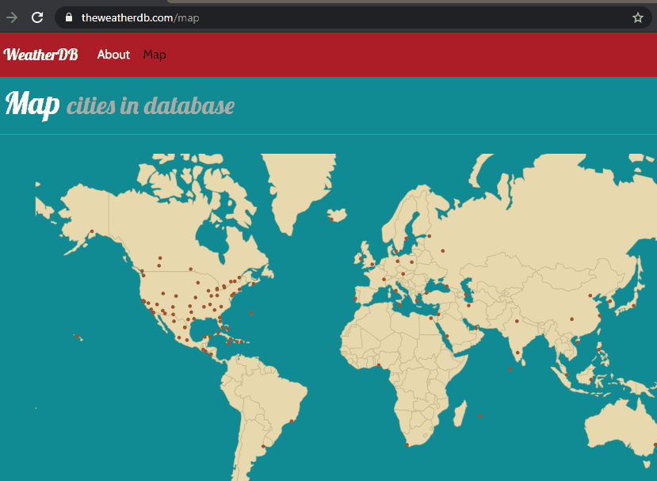

The WeatherDB is a data visualization web application for weather history and forecast data. New data is collected daily from a third-party API (AerisWeather) and saved in the database. These statistics currently include daily max/min temperature, UV index, precipitation. This data visualization tool helps to identify trends in weather data due to climate change, which may be affecting some areas of the world differently from others. To see all cities in the database, check out
map.
